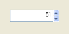

SpinGadget()
Syntax
Result = SpinGadget(#Gadget, x, y, Width, Height, Minimum, Maximum [, Flags])Description
Creates a spin gadget in the current GadgetList.
Parameters
#Gadget A number to identify the new gadget. #PB_Any can be used to auto-generate this number. x, y, Width, Height The position and dimensions of the new gadget. Minimum, Maximum The minimum and maximum values for the gadget. Flags (optional) Flags to modify the gadget behavior. It can be a combination of the following values: #PB_Spin_ReadOnly : The StringGadget is not editable, the number is only changeable by the arrows #PB_Spin_Numeric : The SpinGadget will automatically update the text with value of the state, so SetGadgetText() is not needed.
Return value
Returns nonzero on success and zero on failure. If #PB_Any was used as the #Gadget parameter then the return-value is the auto-generated gadget number on success.
Remarks
A 'mini help' can be added to this gadget using GadgetToolTip().
The following functions can be used to act on a SpinGadget:
GetGadgetState(): Get the current gadget value.
SetGadgetState(): Change the gadget value. For displaying the new value you still must use SetGadgetText()!
GetGadgetText(): Get the text contained in the gadget.
SetGadgetText(): Change the text contained in the gadget.
GetGadgetAttribute(): With one of the following attributes:#PB_Spin_Minimum : Returns the minimum value. #PB_Spin_Maximum : Returns the maximum value.SetGadgetAttribute(): With one of the following attributes:#PB_Spin_Minimum : Changes the minimum value. #PB_Spin_Maximum : Changes the maximum value.The following events are supported through EventType():#PB_EventType_Change: The text in the edit area has been modified by the user. #PB_EventType_Up : The 'Up' button was pressed. #PB_EventType_Down : The 'Down' button was pressed.This gadget supports the SetGadgetColor() and GetGadgetColor() functions with the following values as 'ColorType':#PB_Gadget_FrontColor: Textcolor #PB_Gadget_BackColor : Backgroundcolor
Example
If OpenWindow(0, 0, 0, 140, 70, "SpinGadget", #PB_Window_SystemMenu | #PB_Window_ScreenCentered) SpinGadget (0, 20, 20, 100, 25, 0, 1000) SetGadgetState (0, 5) : SetGadgetText(0, "5") ; set initial value Repeat Event = WaitWindowEvent() If Event = #PB_Event_Gadget If EventGadget() = 0 SetGadgetText(0, Str(GetGadgetState(0))) EndIf EndIf Until Event = #PB_Event_CloseWindow EndIf

See Also
GetGadgetState(), SetGadgetState(), GetGadgetText(), SetGadgetText(), GetGadgetAttribute(), SetGadgetAttribute(), GetGadgetColor(), SetGadgetColor()
Supported OS
All